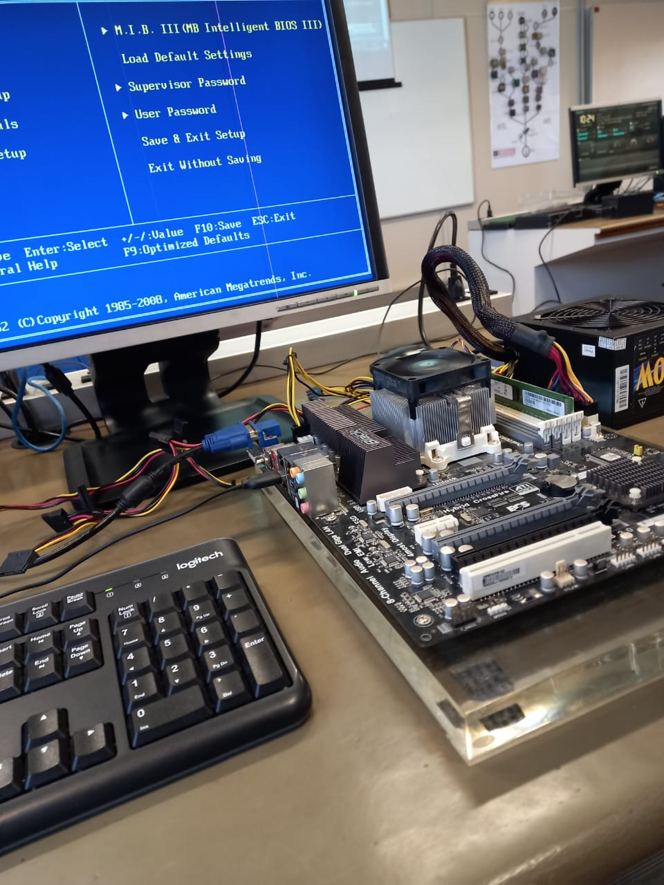
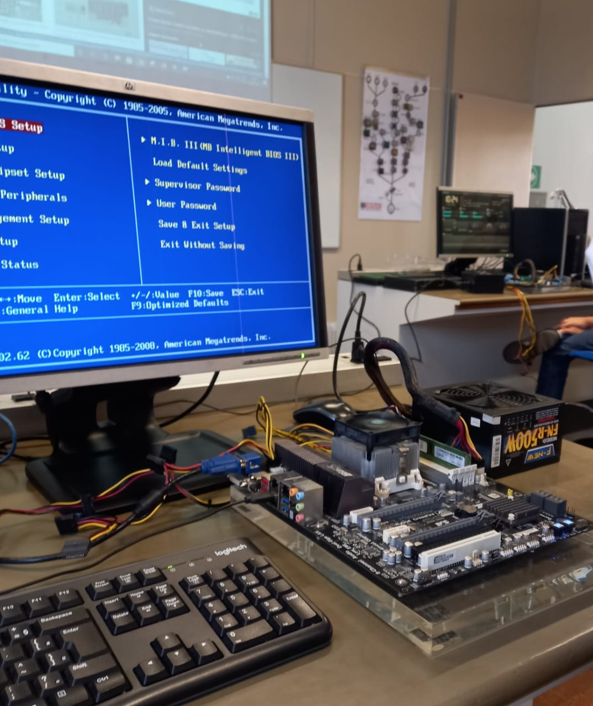

Conheça as matérias iniciais do curso de
Análise e Desenvolvimento de Sistemas
SENAI Prof° Vicente Amato - Jandira

SOP
Sistemas Operacionais
Essa talvez seja a matéria mais próxima de alguém que é puramente usuário, aqui aprendemos sobre o que é um sistema operacional, as várias maneiras de instalação e como usufruir corretamente das funções do mesmo.
Instalando Windows XP
Nesse vídeo podemos acompanhar um dos processos que aprendemos rápido nessa disciplina, nele vemos um exemplo simplificado sem muita atenção aos detalhes da criação de uma maquina virtual - nós aprendemos desde as versões mais recentes até as mais antigas (como o Windows XP).
Um Pouco Sobre Formatação de HD
Além de instalar sistemas operacionais, nós também aprendemos quase todas as faces e detalhes que nos aproximam mais de um técnico, formatar memória e aprender a fazer Dual Boot (coisa citada rapidamente do vídeo acima) completam esse aprendizado.
Dentro do Sistema Operacional
Também vemos nessa matéria como usar algumas formatações básicas no Sistema de Windows, como Word e Excel. Claro que não é algo muito profundo, já que esse não é o foco principal do curso ou da matéria, mas essa também é uma parte importante da matéria "Sistemas Operacionais".
FPOO
Fundamentos da Programação Orientada a Objeto
Nessa matéria aprendemos sobre lógica de programação: O que usar e quando usar para fazer o quê. Como é possível ver nas imagens temos vários projetos onde aprendemos tudo do melhor jeito: em prática!
Console & Interface
Enquanto técnicos em treinamento, outra coisa que aprendemos é justamente essa diferença entre o usuário ( que vai sempre ter uma visão gráfica e simplificada do que fazemos) e o desenvolvedor (nós, que fazemos tudo desde o início e trabalhos no console com visão mais simples e direta do que estamos fazendo e precisando).
Programação & Lógica
O objetivo principal dessa matéria é nos fazer aprender sobre o que, como e onde fazer nosso programa funcionar, sem cometer nenhum tipo de sobrecarregamento em alguma área ou ignorando regras básicas da comunidade (como nomes padrões e etc).
HARE
Hardware e Redes
É essencial para um analista conhecer sobre o funcionamento completo de um computador e como ele se conecta/ comunica com outros computadores e é exatamente sobre isso que tratamos nessa matéria. Aprendemos sobre os componentes e como eles funcionam entre si, além de conceitos iniciais sobre redes e internet.
 LIMA
Linguagem de Marcação
Além de aprendermos os primeiros conceitos de programação, aprendemos os primeiros conceitos para se marcar itens. Ou seja, em Linguagem de Marcação aprendemos a montar o conteúdo e as funções visuais* de um site ou página de um servidor.
*esse site mesmo é um exemplo do que fazemos/ aprendemos em Linguagem de Marcação